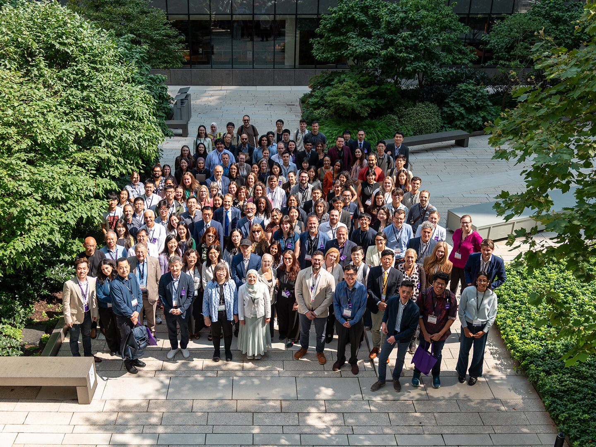
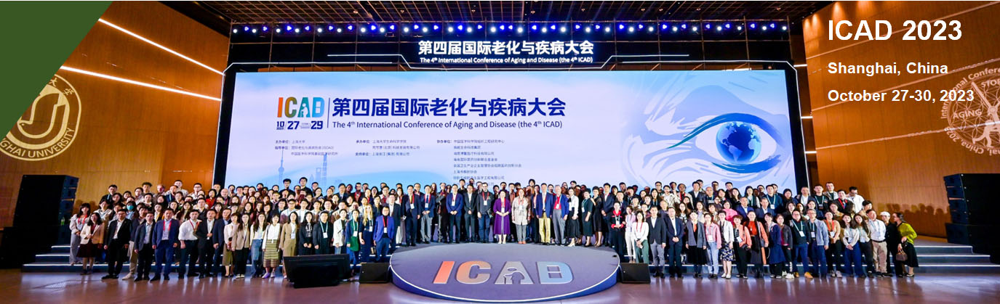
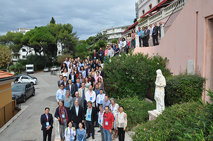
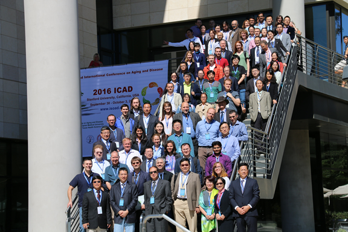
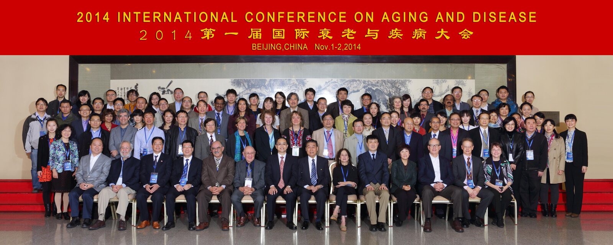

Our History
Past Conferences
Five earlier editions connect the ICAD scientific community across Beijing, Stanford, Nice, Shanghai, and New York City.

Fifth Edition · Year Under Review
New York City, USA
NYU Langone Health
August 13–14 · Year requires confirmation
A two-day workshop on postmortem research in dementia, connecting in vivo neuroimaging with postmortem neuropathology in Alzheimer’s disease and related dementias.

Fourth Edition · 2023
Shanghai, China
Zhangjiang Science Hall
October 27–30, 2023
The fourth ICAD brought the conference’s scientific community together in Shanghai for research presentations, exhibitions, and exchange.

Third Edition · 2018
Nice, France
Le Saint Paul Convention Center
October 5–7, 2018
Hosted by the Institute for Research on Cancer and Aging, Nice (IRCAN), and ISOAD, the third edition explored aging and age-related diseases through scientific presentations and collaboration.

Second Edition · 2016
Stanford, California, USA
Li Ka Shing Learning and Knowledge Center, Stanford University
2016 · Exact dates not stated
The second ICAD convened scientists, scholars, and students at Stanford University to exchange aging research and develop collaborations across disciplines.

First Edition · 2014
Beijing, China
Beijing International Convention Center
November 1–2, 2014
The inaugural ICAD brought researchers and physicians together to discuss aging and age-related disease and advance healthy, productive longevity.